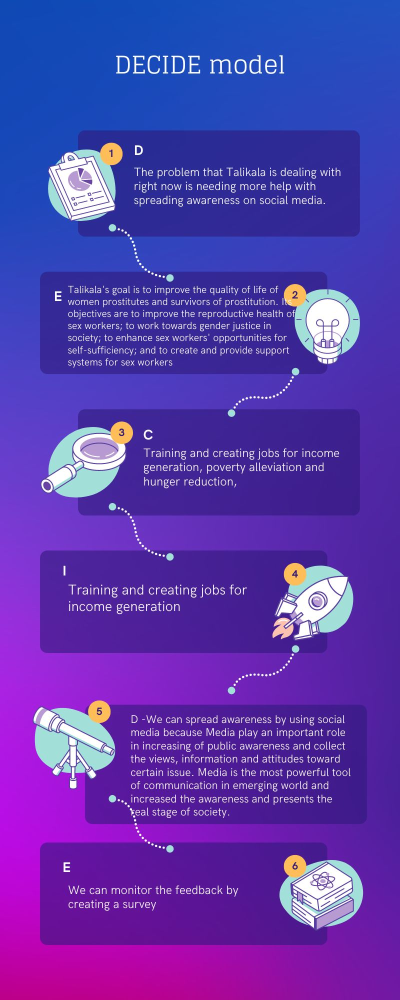

Decide Model
About the Designer:

Fritz laurence Diaz his 15 years old from ADDU. he loves coding because its fun. His hobbies are playing basketball, badminton, playing video games and riding bikes. His zodiac sign is scorpio. He started coding this year
Back to Top